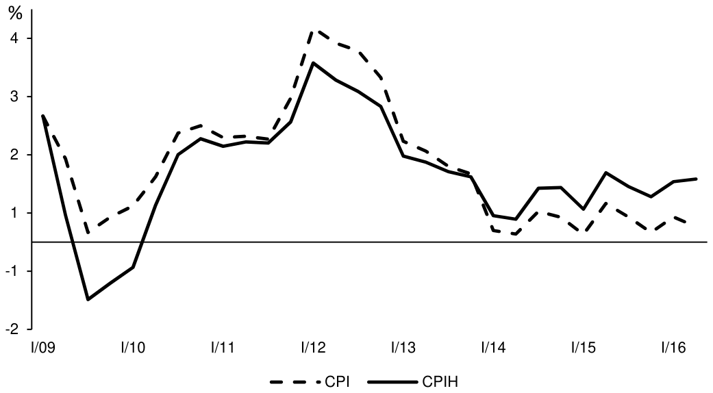

Abstract
In this note we describe the Czech National Bank’s approach to incorporating macroprudential considerations into monetary policy decision making: the use of a broader inflation measure that gives substantial weight to house prices and is considered along with headline CPI inflation. We argue that, in terms of theory, the broader inflation gauge is at least as suitable for measuring the value of money as headline CPI inflation is, but we also acknowledge practical problems that arise from the use of the broader index.

Reference: Mojmir Hampl, Tomas Havranek (2017), "Should Inflation Measures Used by Central Banks Incorporate House Prices? The Czech National Bank's Approach." Czech National Bank Research and Policy Notes 1/2017.
How to cite
Mojmir Hampl, Tomas Havranek (2017), "Should Inflation Measures Used by Central Banks Incorporate House Prices? The Czech National Bank's Approach." Czech National Bank Research and Policy Notes 1/2017.
BibTeX
@techreport{hampl2017cpih,
author = {Mojmir Hampl and Tomas Havranek},
title = {Should Inflation Measures Used by Central Banks Incorporate House Prices? The Czech National Bank's Approach},
institution = {Czech National Bank},
type = {Research and Policy Notes},
number = {1/2017},
year = {2017},
}
Other versions
The note also circulated as IES Working Paper 2017/12, “Should Inflation Measures Used by Central Banks Incorporate House Prices? The Czech Approach”. A version titled “Should monetary policy pay attention to house prices? The Czech National Bank’s approach” appears in BIS Papers No 94 (December 2017), pages 129-140. The authors made the case for general readers in Central Banking (April 2017) and in a VoxEU column, “Headline inflation measures shouldn’t ignore costs of home ownership” (September 2017), which is reproduced in our research notes.